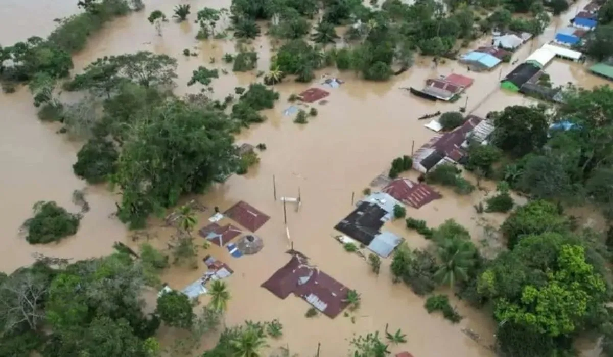

Energía limpia del agua · La renovable más importante del mundo
La hidroenergía nace de la necesidad del ser humano de aprovechar la fuerza del agua como fuente de energía. Desde civilizaciones antiguas ya se utilizaban ruedas hidráulicas para mover maquinaria y moler grano. Con la Revolución Industrial, se buscó producir electricidad de forma más eficiente, dando origen a las primeras hidroeléctricas.
La primera central hidroeléctrica del mundo fue construida en 1882 en Appleton, Wisconsin (EE.UU.). Fue impulsada por sistemas desarrollados en la era de Thomas Edison. Su objetivo era generar electricidad para iluminar una fábrica de papel.
Se buscaba una fuente de energía constante, renovable y más barata que el carbón.
Hoy es una de las fuentes renovables más importantes del mundo, reduciendo emisiones y aportando energía limpia. A nivel mundial, la hidroenergía representa aproximadamente el 16% de la generación eléctrica y en Colombia supera el 70%.
Colombia depende fuertemente de la energía hidroeléctrica. Aproximadamente el 70% de la energía eléctrica del país proviene de fuentes hidráulicas, lo que la convierte en una de las matrices más limpias de la región.
Capacidad instalada hidroeléctrica en Colombia: ~12,000 MW
Selecciona una hidroeléctrica para ver su información ⚡
Lluvias intensas y saturación de embalses. El cambio climático aumenta la frecuencia de fenómenos extremos, lo que requiere sistemas de alerta temprana y gestión adecuada de niveles.
Las represas modifican el flujo natural del agua, afectando ecosistemas río abajo y comunidades que dependen del río. Es fundamental mantener caudales ecológicos.
Evita erosión, pérdida de biodiversidad y desplazamiento de comunidades. Las mejores prácticas incluyen hidroeléctricas de pasada que no almacenan grandes volúmenes.

Monitoreo constante, sistemas de alerta temprana, protección de cuencas hidrográficas, participación comunitaria y planes de compensación ambiental.
La hidroenergía es sostenible si se gestiona correctamente, con estudios de impacto ambiental rigurosos y compensaciones justas para comunidades afectadas.
Datos de consumo hidroeléctrico y participación en electricidad
| Año | Consumo Hidroeléctrico (TWh) | % Hidro en Electricidad |
|---|---|---|
| Selecciona un país para ver los datos |
Ingresa tu consumo eléctrico mensual (kWh) y te mostraremos cuánta energía hidroeléctrica se necesitaría para cubrirlo según diferentes escenarios.
📊 Producción por Fuente Renovable (TWh - 2022)
💧 Hidroenergía: 4,280 TWh
🥧 Participación en generación eléctrica mundial
💧 Hidroenergía: 16.2%
📈 Tendencia capacidad hidroeléctrica instalada (GW)
💧 210 GW (1965) → 1,410 GW (2022)
📉 Hidroenergía vs Otras Renovables vs Convencional
💧 Líder en renovables desde 1965